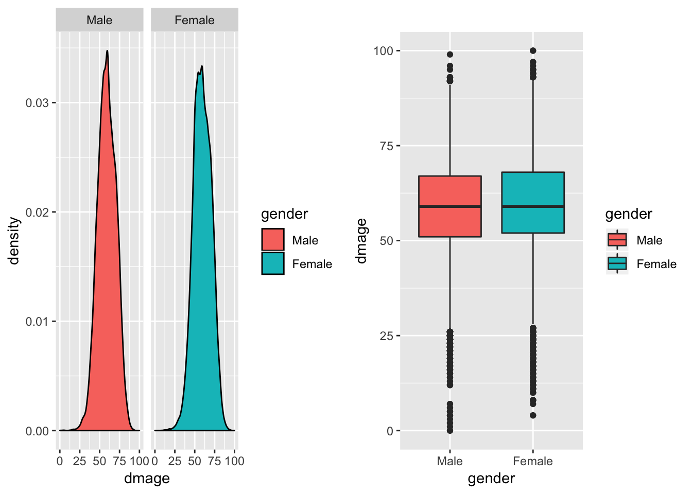
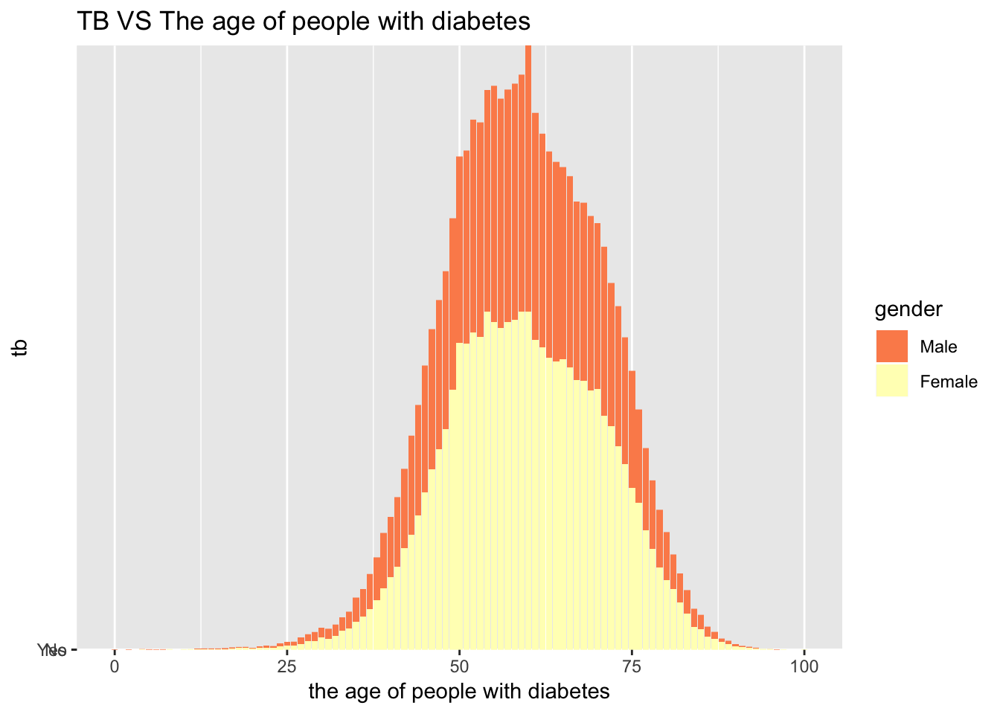
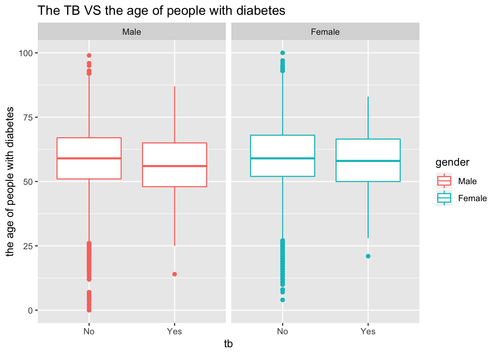

load("dm.Rdata")
df_combine = dm_base %>%
rename(
subject_id = JiBenCID,
glu_average = fastglu,
weight_initial = tizhong_1st,
weight_average = tizhong,
height = ShenGao,
glu_initial = kfxt_1st,
gender = xingbie,
district = GuanLiQX,
sys_pressure = Sbp,
dia_pressure = Dbp,
exercise_time = xiuxiansj,
exercise = xiuxiantl,
drug_insulin = insulin,
drug_oral_sulfo = sulfonylurea,
drug_oral_biguanide = biguanide,
drug_oral_glu = glu_inhib,
retina = reti,
skin = derm,
vessel = vesl,
nerve = neur,
kidney = neph,
depression = depress,
dmtime = quezhensj,
birthyear = birth_year,
birthmon = birth_mon,
dmdatayear = rucu_year,
dmdatamon = rucu_mon,
dmdataage = rucuage,
drug_order = fuyaoqk) %>%
mutate(
gender = factor(gender, labels = c("Male", "Female")),
district = as.factor(district),
glu_self_monitor = as.factor(celiangxtgl),
bmi_initial = weight_initial/(height/100)^2,
bmi_average = weight_average/(height/100)^2,
bmi_change = bmi_average - bmi_initial,
glu_change = glu_average - glu_initial,
tb = as.factor(ifelse(censer == 1, "No", "Yes")),
exercise = as.factor(exercise),
drug_oral_name = case_when(drug_oral_sulfo == "1" & drug_oral_biguanide == "0" & drug_oral_glu == "0" ~"sulfonylurea",
drug_oral_biguanide == "1" & drug_oral_sulfo == "0" & drug_oral_glu == "0" ~ "biguanide",
drug_oral_glu == "1" & drug_oral_biguanide == "0" & drug_oral_sulfo == "0" ~ "glu_inhib",
drug_oral_sulfo == "1" & drug_oral_biguanide == "1" & drug_oral_glu == "0" ~"sulfonylurea&biguanide",
drug_oral_biguanide == "1" & drug_oral_sulfo == "0" & drug_oral_glu == "1" ~ "biguanide&glu_inhib",
drug_oral_sulfo == "1" & drug_oral_biguanide == "0" & drug_oral_glu == "1" ~"sulfonylurea&glu_inhib",
drug_oral_sulfo == "1" & drug_oral_biguanide == "1" & drug_oral_glu == "1" ~"sulfonylurea&glu_inhib&biguanide",
TRUE ~ "NA"),
drug = drug_oral_biguanide + drug_oral_biguanide + drug_oral_glu + drug_insulin,
retina = as.numeric(retina),
skin = as.numeric(skin),
vessel = as.numeric(vessel),
nerve = as.numeric(nerve),
kidney = as.numeric(kidney),
complications = retina + skin + vessel + nerve + kidney + depression,
complications = as.factor(complications),
drug_order = as.factor(drug_order)
)
levels(df_combine$exercise) <- list('1' = 1, '2' = 2, '3' = c(3,4))
levels(df_combine$district) <- list("Huangpu" = 310101, "Xuhui" = 310104, "Changning" = 310105, "Jingan" = 310106, "Putuo" = 310107, "Zhabei" = 310108, "Hongkou" = 310109, "Yangpu" = 310110, "Minhang" = 310112, "Baoshan" = 310113, "Pudong" = c(310115, 10119), "Jiading" = 310114, "Jinshan" = 310116, "Songjiang" = 310117, "Qingpu" = 310118, "Fengxian" = 310120, "Chongming" = 310230)
levels(df_combine$glu_self_monitor) <- list("Yes" = 1, "No" = 2:3)Make a diabete-age distribution plot
plot_dia_d<-df_combine %>%
mutate(dmage = as.numeric(dmage),
gender = as.factor(gender)) %>%
ggplot(aes(x = dmage, fill= gender)) +
geom_density()+
facet_grid(.~gender)+
labs(
x = "the age of people with diabetes",
y = "gender"
)+
ggtitle('The age of people with diabetes(Male VS Female)')
plot_dia_v<-df_combine %>%
mutate(dmage = as.numeric(dmage),
gender = as.factor(gender)) %>%
ggplot(aes(x = gender, y= dmage, fill=gender)) +
geom_boxplot()+
labs(
x = "the age of people with diabetes",
y = "gender"
)+
ggtitle('The age of people with diabetes(Male VS Female)')
plot_dia_d+plot_dia_v
Make a tb-diabete age distribution plot
df_combine %>%
mutate(dmage = as.numeric(dmage),
tb = as.factor(tb),
gender = as.factor(gender)) %>%
ggplot(aes( x=dmage,y=tb,group=gender) )+
scale_fill_brewer(palette = "Spectral") +
geom_col(aes(fill=gender))+
labs(
x = "the age of people with diabetes",
y = "tb"
)+
ggtitle('TB VS The age of people with diabetes')
df_combine %>%
mutate(dmage = as.numeric(dmage),
gender = as.factor(gender)) %>%
ggplot(aes(x = tb, y = dmage, color = gender)) +
geom_boxplot()+
facet_grid(.~gender)+
labs(
x = "tb",
y = "the age of people with diabetes"
)+
ggtitle('The TB VS the age of people with diabetes')
time_df <-df_combine %>%
na.omit(`_COL19`) %>%
rename(tbtime = `_COL19`) %>%
select(tbtime, tb, gender, dmage, birthyear) %>%
mutate(gender = as.numeric(gender),
birthyear = as.numeric(birthyear),
dmage = as.numeric(dmage),
tb = as.numeric(tb),
tbtime = as.numeric(tbtime))
model_time <- lm(tb ~ gender + dmage + birthyear,data = time_df, family = binomial())## Warning: In lm.fit(x, y, offset = offset, singular.ok = singular.ok, ...) :
## extra argument 'family' will be disregardedsummary(model_time)##
## Call:
## lm(formula = tb ~ gender + dmage + birthyear, data = time_df,
## family = binomial())
##
## Residuals:
## Min 1Q Median 3Q Max
## -4.10e-16 -2.91e-16 -2.25e-16 -8.20e-17 1.49e-13
##
## Coefficients:
## Estimate Std. Error t value Pr(>|t|)
## (Intercept) 2.000e+00 6.231e-14 3.21e+13 <2e-16 ***
## gender -2.661e-16 4.363e-16 -6.10e-01 0.542
## dmage -1.007e-18 3.150e-17 -3.20e-02 0.974
## birthyear -5.836e-18 3.126e-17 -1.87e-01 0.852
## ---
## Signif. codes: 0 '***' 0.001 '**' 0.01 '*' 0.05 '.' 0.1 ' ' 1
##
## Residual standard error: 5.338e-15 on 781 degrees of freedom
## Multiple R-squared: 0.5003, Adjusted R-squared: 0.4984
## F-statistic: 260.6 on 3 and 781 DF, p-value: < 2.2e-16model_time %>%
broom::tidy() %>%
mutate(OR = exp(estimate),
log_OR = estimate,
OR_lower = exp(estimate - std.error*1.96),
OR_upper = exp(estimate + std.error*1.96)) %>%
select(c(term, log_OR, OR, p.value, OR_lower, OR_upper)) %>%
knitr::kable()| term | log_OR | OR | p.value | OR_lower | OR_upper |
|---|---|---|---|---|---|
| (Intercept) | 2 | 7.389056 | 0.0000000 | 7.389056 | 7.389056 |
| gender | 0 | 1.000000 | 0.5420792 | 1.000000 | 1.000000 |
| dmage | 0 | 1.000000 | 0.9744966 | 1.000000 | 1.000000 |
| birthyear | 0 | 1.000000 | 0.8519468 | 1.000000 | 1.000000 |